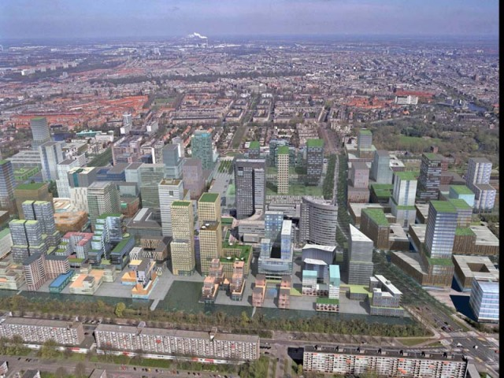
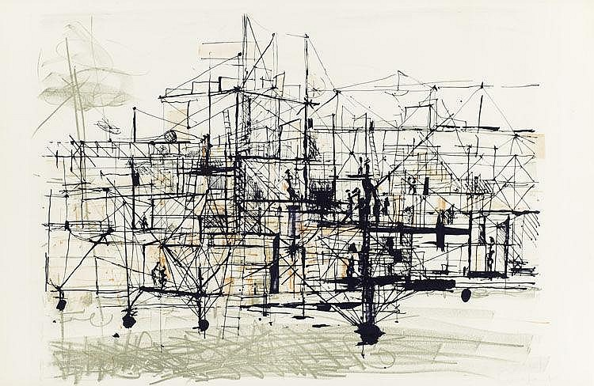
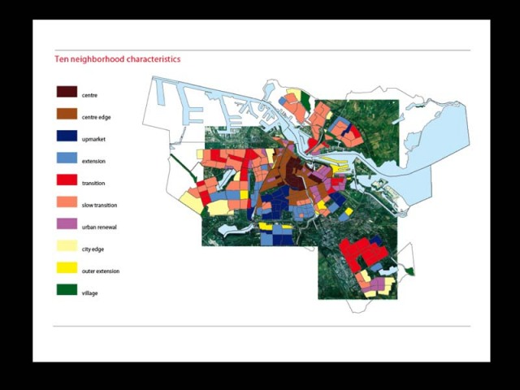

Back to the future of the Creative City: Amsterdam's Creative Redevelopment and the Art of Deception
by Merijn Oudenampsen
Sometimes it is necessary to dig into the past in order to illuminate the present. In this case, contrasting Amsterdam’s ongoing Creative City hype with an utopian precursor will hopefully shed some light on the contradictions inherent in the fusion between creativity and industry. For being a hype, the Creative City policy has shown remarkable vigour and life span. Not unlike well known ageing rock bands, even at old age it has been able to maintain it’s spell on groupies and adherents at local city governments around the western world.[1] However, I do not intend to argue that when it was still young and fresh, Richard Florida’s ‘Creative Class Rock’ rang any truer; only that all along the line, a different tune is being played than the lyrics imply. I will argue that Amsterdam’s Creative City policy - far from intending to make the city’s entire population more creative - is predominantly a branding exercise, an expression of a much more general shift towards entrepreneurial modes of city government; a shift that is presently being played out in an impressive urban redevelopment of Amsterdam.
The comparison between sociologist Richard Florida - author of two books on the rise and the flight of the Creative Class - and a rock star is not unusual. Google ‘rock star’ and ‘Richard Florida’ and you will find dozens of descriptions of performances by the ‘rock star academic’ responsible for introducing pop sociology into regional economics. Amongst the urban policy do’s and don’ts he prescribes, ‘lacking rock bands’ even figures prominently amongst the reasons why a city could lose out on the economic development race[2]. But this article is not about the interesting fusion between pop culture and social science, rather about the utopian claims that are being made for the creative economy. Florida has pronounced creativity to be a ‘great equaliser’, pleading for a ‘New Deal’ of the creative economy. Likewise, Cohen - the mayor of Amsterdam - has pronounced Amsterdam to be a Creative City that will ‘foster the creativity of all it’s inhabitants’.
In retrospect, these claims can be seen as somewhat distorted echoes of an earlier utopian project that alluded to the revolutionary rise of creativity. Let’s take a short leap back in history, back to the future as imagined by the Dutch avant-garde, and more specifically the Dutch artist Constant Nieuwenhuys. Constant was one of the founders of the Dutch experimental art group Reflex, which later became part of the international COBRA current. Discontented with the limitations of the world of art and ‘the individualistic nature’ of painting, he abandoned painting in 1953 to focus on the more ‘collective’ use of metal and architectural techniques. In 1957 he became a co-founder of the Situationist International (SI), writing with Guy Debord the now well known tract on Unitary Urbanism. Till his resignation in 1961, he would play an essential role in the formulation of a Situationist perspective on the city, based on a critique of existing modernist urbanism.
In 1956 Constant started what would become a visionary architectural project that would stretch out over 20 years. An utopian city that went by the name of New Babylon; it consisted of an almost endless series of scale models, sketches, etchings, collages, further elaborated by manifestoes, lectures, essays and films. The project was a provocation, an explicit metaphor for the Creative City: The modern city is dead; it has been sacrificed to the cult of utility. New Babylon is the project for a city in which people will be able to live. For to live means to be creative. New Babylon is the product of the creativity of the masses, based on the activation of the enormous creative potential which at the moment lies dormant and unexploited in the people. New Babylon assumes that as a result of automation non-creative work will disappear, that there will be a metamorphosis in morals and thinking, that a new form of society will emerge.[3]
Constant envisaged a society where automation had realised the liberation of man from the toils of industrial work, and it’s replacement by a nomadic life of creative play, outside of the economic domain and in disregard of any considerations of functionality: ‘Contrary to what the functionalists think, culture is situated at the point where usefulness ends’, was one of Constant’s more provocative statements. Homo Faber, the working man of industrial society was to be succeeded by Homo Ludens, the playful man or as Constant stated, creative man. This was the inhabitant of New Babylon that thanks to modern architectural techniques would be able to spontaneously control en reconfigure every aspect of the urban environment. Constant took the surrealist slogan ‘poetry should be made by all’ and translated it to the urban environment: ‘tomorrow, life will reside in poetry’. The work of Constant Nieuwenhuys thus combined a distaste for modernist functionalism with an intense appreciation of the libratory potentials of new technology.
Mechanisation would result in the arrival of a ‘mass culture of creativity’ destined to revolt against the superstructure of bourgeois society in order to destroy it completely and take the privileged position of the artist down with it. A society would be created where, in accord with Marx’ vision on art in a communist society, ‘there are no painters but only people who engage in painting among other activities’[4]. The work of Constant would have a direct and major influence on the rise of youth movement Provo. The Dutch Yippies proved to be an almost perfect incarnation of Homo Ludens; through relentless provocation, happenings and playful actions, Provo would bring the authoritarianism of the Dutch 50’s down to it’s knees.
Life is put to Work
However, developments took an unexpected turn. automation and consequent deindustrialisation, the outsourcing of manufacturing to 'Newly Industrialising Countries', did not lead to the liberation of Homo Ludens (or maybe we should grant Homo Ludens a short and partial victory - a short interlude located somewhere in the turmoil and youth culture of the 60’s - before being sent back to work). As is well known, since the sixties the total amount of working hours has grown steeply. Together with the consolidation of consumption as a leisure activity, it has led to an unprecedented amount of human activity being directly or indirectly incorporated into the sphere of economic transactions. A development Marx would have called ‘real subsumption’, the extension of capitalism onto the field of the ontological, of lived social practice.
Whereas Constant envisioned the liberation of the creative domain from the economic, right now we are witnessing - in sync with the Creative City discourse - the extension of the economic into the creative domain. This is exemplified by the transformation of the artist into a cultural entrepreneur, the marketing of (sub)cultural expressions, the subservience of culture to tourist flows and the triumph of functionalism over bildungsideal at the university. An interesting spatial illustration is that what was before a fringe economy of the arts occupied also a fringe position in the Amsterdam housing market, most notably in the squatted dockland warehouses. Now that the art economy has been incorporated and elevated towards an apparently pivotal position in the urban economy, it has been accommodated into the city through mechanisms such as the broedplaatsenbeleid[5] or temporary housing contracts. The majority of non-functional space in the city, derelict or squatted territories, have now been redeveloped or are involved in processes moving towards development. There is no longer an outside position.
What distinguishes the earlier utopian Creative City from the one referred to by Florida and the Amsterdam City Council? To start with, what’s important to note is that in the post-Fordist economy, where the Fordist factory has been decentralised and socialised, the rise to prominence of the creative sector in advanced economies is predicated upon displacement of industrial functions to low wage localities and the exploitation of cheap manual labour. This new functional divide in the global economy - and it’s polarised wage structure - is referred to as the 'New International Division of Labour'. As part of this development, we have seen the rise of global cities whose economic success depends on the presence of high tech innovation and global control functions. These economic nodes coordinate the international flows of goods, finance outsourced production, market and design it’s products and maintain a monopolist control over client relations[6]. The claims of the new creative city as being a ‘great equalizer’ turns, in a global perspective, into the opposite; it is based on functional inequality. Now let’s take a closer look at the city.
Amsterdam™
To properly understand the arrival of the Creative City policy and what sets it aside from it’s utopian predecessor, we have to place it in a larger context. The Creative City is part and parcel of a bigger shift hitting the city, causing the Keynesian management of bygone era’s to be replaced by an entrepreneurial approach. The rise in importance of ‘footloose’ productive sectors for cities’ economic well being has led to increased interurban competition. Amsterdam is pitted against urban centres such as Barcelona, London, Paris and Frankfurt, in a struggle to attract economic success in the form of investments, a talented workforce and busloads of tourists flocking to the city. The ever present threat of inter-urban competition is continuously being rhetorically invoked and inflated, replacing previously dominant considerations of the public good. To illustrate my point, recently even the discussion on whether to discontinue a prohibition of gas heaters on the terraces of Amsterdam cafés were framed in these terms: ‘It’s a serious disadvantage in comparison with cities like Berlin and Paris’, according to the leader of the local social democrat party. The opinion of the city’s population itself wasn’t even mentioned in the newspaper article.[7]
The dominance of entrepreneurial approaches to city politics is the feature of a new urban regime, labelled by scholars as the ‘Entrepreneurial City’[8]. With it’s origins in the US reality of neo-liberal state withdrawal from urban plight, it has taken some time to arrive in the corporatist Netherlands and filter through the minds of it’s policy makers. In this new urban regime, independent from the colour of the party in power, the public sector displays behaviour that was once characteristic for the private sector: risk taking, innovation, marketing and profit motivated thinking. Public money is invested into private economic development through Public Private Partnerships, to outflank the urban competition. Hence the rise of urban mega developments and marketing projects such as the Docklands in London, the Guggenheim in Bilbao or the Zuidas in Amsterdam. A concern voiced by critics is that although costs are public, profit will be allocated to the urban elite, hypothetically to ‘trickle down’ to the rest of the population.
To face up to this new market reality, where cities are seen as products, and the city council as a business unit, Amsterdam inc. has launched the branding projects I Amsterdam and Amsterdam Creative City. One of the first steps of the new progressive city council, once installed in the spring of 2006, was to launch a ‘Top City Programme’, aimed at consolidating the city’s ‘flagging’ position in the top ten of preferred urban business climates: Viewed from an outsider’s vantage point, Amsterdam is clearly ready to reposition itself. This is why we’ve launched the Amsterdam Top City programme. In order to keep ahead of the global competition, Amsterdam needs to renew itself. In other words, in order to enjoy a great future worthy of its great past, what Amsterdam needs now is great thinking.[9]
Of course, ‘creativity will be the central focus point’ of this programme, since ‘creativity is the motor that gives the city its magnetism and dynamism’. However when one looks beyond the rhetoric, at the practicalities of the programme, it is surprisingly modest: sponsored expat welcome centres in Schiphol Airport, coaching for creative entrepreneurs by mayor Dutch banks and MTV, ‘hospitality training’ for caterers, ‘Amsterdam Top City’ publications in KLM flights, and the annual Picnic Cross Media week, a conference aspiring to be the Dutch Davos of creative entrepreneurs.
In arguably one of the best analysis of the Creative City theory yet, geographer Jamie Peck[10] asked himself why it is that Florida’s work proved to have such an impressive influence on policy makers around the world. He came to the sobering conclusion that it wasn’t because Florida’s creative city thesis was so groundbreaking – various authors had published on the knowledge economy before - but mostly because it provided a cheap, non-controversial and do-able marketing script that fitted well with the existing entrepreneurial schemes of urban economic development. Something city authorities could afford to do on the side, a low budget PR scheme complemented by a reorientation of already existing cultural funding. In Amsterdam however, creative branding may be modest in it’s budget but it is certainly extensive in it’s effects - it is the immaterial glazing on the cake of an impressive physical redevelopment of the city.
The Urban Makeover
Amsterdam abounds with building works; it is facing what I have called an ‘Extreme Makeover’. The city’s old harbours are being redeveloped into luxurious living and working environments; in it’s southern belly a new skyline is being realised, the Zuidas, a high rise business district that is supposed to function as a portal to the global economy. In the post war popular neighbourhoods more houses are being demolished than ever before in the history of the town, and a significant part of the social housing will make way for more expensive owner-occupant apartments. The trajectory of the new metro line – a straight line of sand, cement and continuous construction works – crosses the city from North to South and thus connects the new city with the old.
Not only is one of Europe’s largest urban renewal operations underway and has demolition reached a historical high, the image of the city itself is also being reworked. In both the re-branding and redevelopment of Amsterdam, the creative sector plays an important role. Creative industry is supposed to function as catalyst for urban redevelopment, changing the image of a neighbourhood from backward to hip. Schemes have been put into place to temporarily or permanently house artists in neighbourhoods to be upgraded. Although modest in it’s budget the I Amsterdam and Creative City marketing campaigns are conceptually advanced (and extensively present in the public’s consciousness), for city marketing is the apex of consumer generated content, the dominant trend in marketing techniques. Creative hipsters serve as a communicative vessel for branding projects; in between concept stores, galleries, fashion- and street art magazines, the cultural economy expands itself over the urban domain and in the public realm.
The new marketing function of the creative sector is maybe best illustrated by the recent project of Sandberg, called ‘Artvertising’. It involves the facade of the Sandberg fine arts and design faculty being turned into a huge billboard filled with logo’s of predominantly major companies accompanied by a marginal visual presence of cultural projects. The sixteen thousand tiles of the facade (35x29cm each) were sold for 20 euros a piece, with the mentioning of all the business savvy people of the office district Zuidas passing on the adjacent ring road. A small blurb from the website of Artvertising: Every self considered art or design intellectual ends up twisting his or her nose to the so-called 'commercial world'. Art, culture, criticism is what it matters. But we don't think so. We believe that now, more than always, the world is ruled by commercial and economical relationships. Culture defines, and most important, is defined these days by market dynamics.[11]
The Sandberg project is a beautiful illustration of the state of art in the Entrepreneurial City. Perfectly vacuous, it’s like a bubble that’s bound to burst. The genius of the project - note also it’s grammatical bluntness - is that it becomes at once both the tool of critique and it’s object; the embodiment of post critical art, stretched beyond the cynical dystopias of Rem Koolhaas. It did not fail in sparking some resistance: during its one month’s existence, it was modestly vandalised by a group calling itself the ‘Pollock commando’, wanting to reclaim the facade as a ‘public canvas’ by throwing paint bombs on it[12]. Besides it’s uncritical embrace of the new commercial role of the artist as entrepreneur, the ‘Artvertising’ project is also reflective of another tendency in Amsterdam’s creative economy. With the borders between culture and economy fading away, the assessment of the value of art and cultural practice has risen in significance.
The Artificial Organic of Real Estate
In a recent article in Real Estate Magazine[13] we can read more about the strange collusion between the arts and real estate. It reads: ‘The concept of the Creative City is on the rise. Sometimes planned, sometimes organic, but up till now always thanks to real estate developers’. The article describes a round table discussion by real estate entrepreneurs on the Creative City, organised by René Hoogendoorn. She is the director of ‘Strategic Projects’ at ING Real Estate, the real estate branch of one of the biggest banking conglomerates of the Netherlands. ‘Strategic Projects’ means according to Hoogendoorn that she initiates the development of projects that need ‘soul’; the business district Zuidas and the Overhoeks terrain, the redevelopment in the northern docklands of the old Shell factory terrain. She combines this function with the advisory board of the Rietveld Art Academy, the spatial planning department of the employers federation and with being one of the driving members of the Amsterdam Creativity Exchange, a club subsidised by the Creative City policy that according to it’s own words ‘provides an environment in which business and creativity meet’[14]. Thus it is no coincidence that the last meeting of the Creativity Exchange took place in the empty Shell offices of the Overhoeks terrain, in that way providing already a taste of the much needed ‘soul’[15]. In the article, Hoogendoorn explains that ING Real Estate invests in art and culture up to the point that it increases the value of real estate surrounding it. Interesting examples are ING Real Estate funding Platform 21, the Design museum at the Zuidas, and sponsoring the post squatter performance festival Robodock on the northern docklands. Hogendoorn and other real estate developers are still struggling with the question ‘how to assess up-front the net cash value of the future added value of culture’. Which shows there is still some way to go for the colonisation of culture.
Another interesting announcement in the article is that real estate developers have now come to realise the importance of ‘software’ for the successful realisation of real estate ‘hardware’. Cultural institutions and temporary art projects create ‘traffic’, and allow developers to slowly bring property ‘up to flavour’: ‘It’s about creating space! The thing not to do is to publicly announce you’re going to haul in artists; instead, give them the feeling they’ve thought of it themselves. If it arises organically, levels will rise organically’[16]
The distinction between urban ‘software’ and ‘hardware’ was initially coined as an architectural term by the pop-art architecture group Archigram, to champion the use of soft and flexible materials like the inflatable bubble in stead of modernist ‘hardware’ realised with steel and cement. Together with contemporaries such as the Italian group Archizoom and publications such as Raban’s Soft City[17], Archigram levelled a critique against deadpan modernism, putting forward a more organic conception of the city as a living organism. Urban software thus acquired it’s present day computer analogy, where software is the ‘programming’ of the city and hardware it’s ‘infrastructure’. Much like the SI - experimenting with the bottom up software approach through psycho-geography and the dérive – subjective, organic and bottom-up approaches became a focus point for utopian urbanism[18]. The recuperation of the utopian language of the sixties into neo-functionalism by real estate entrepreneurs is tragically appropriate. In the SI’s ‘Formulary for a New Urbanism’, Ivan Chtcheglov argues for a city where everyone could live in their ‘personal cathedral’. He proposed a city with districts corresponding to their inhabitants’ emotional life: Bizarre Quarter, Happy Quarter, Noble and Tragic Quarter, Historical Quarter, Useful Quarter, Sinister Quarter etc.[19] In a similar but very different vein, the present restructuring of the Dutch housing market has seen the arrival of a ‘differentiated living milieus’ fashion where planners partition existing neighbourhoods into theme areas, accompanied by a discourse of ‘consumer choice’. In the Westelijke Tuinsteden, the biggest redevelopment of social housing in Amsterdam, planners ‘re-imagined’ the entire neighbourhood into different consumer identities such as ‘dreamer’, ‘doer’, ‘urbanite’, ‘networker’, ‘villager’ etc. When consumer demand from outside the neighbourhood failed to materialise, however, the planners had to readapt their visions, reluctantly returning to a half-hearted focus on the needs of the local population.[20]
Thus the hardware-software dialectic has become an intrinsic part of the current urban development approach. To turn to an example of entrepreneurial city hardware, we could look at the new mega development, the business district Zuidas, and the North South metro line that will connect it to the city (together good for a few billions of public investment). An example of software would be the new media conference Picnic ’06, a gathering of businessmen from the creative sector that was granted almost half a million by both the city council and the national government and still managed to ask an entrance fee of 750 euros for a three day conference. Creative City schemes thus become an attempt to build competitive ‘urban software packages’; or to ‘program’ space, an expression of French urbanist Lefebvre to denote the top down organisation of space.[21] To continue with the computer analogy, the first problem with these top down approaches is that their ‘source code’ is undisclosed. Public planning and citizen participation in as well the Zuidas, the North South metro line and the redevelopment of the Westelijke Tuinsteden have been problematic, with most of the decisions being taken behind closed doors, to be publicly legitimised afterwards by false arguments or financial ‘miscalculations’. Only when that code is broken, we can truly asses additional problems of the creative city script, such as the curtailment of the public sphere or increasing social polarisation.
Multiple Personality (Dis)order
The subject of the Creative City is not Homo Ludens as imagined by Constant, but the entrepreneur in all it’s guises, for the creative city is an entrepreneurial city. Accordingly, in the cultural field the artist is being converted into a cultural entrepreneur. An illustrative example is the conversion of the Artist Allowance, a state scheme that before it’s current transformation was just a monthly allowance, but has now been made conditional on a yearly growing profit. Each year, artists have to earn more to be able to apply to the WWIK. The new Art Plan and other Creative City initiatives attempt to infuse a entrepreneurial mindset into the artist by giving them courses on administration and entrepreneurial strategies. The city’s cultural funding is increasingly geared to cross-over projects between the arts and the economy. Of course the great threat of competition is again invoked: “Despite big investments of the council and the national government, the cultural significance of Amsterdam, and accordingly the international position of Dutch culture, is under pressure”.[22]
A battlefield is staged in Negri & Hardt’s Empire between a creative, communicative and productive multitude and parasitic capital. In the Entrepreneurial City this opposition becomes a permanent psychological state, a multiple personality disorder. The Creative Class is at once Homo Ludens and Homo Economicus, it incorporates the drive to create, produce and socialise with the drive to appropriate those powers and passions. If we use Marx’s words, if capital is a social relation; then the entrepreneurial mindset is the interface of that relation.
Paradoxically, the consequence of Amsterdam conversion into cultural knowledge economy is that we are more and more economical with creativity. Universities await the introduction of a voucher system, a ticket system comparable to the food stamps in crisis times. Popular, but not economically successful, courses in the polytechnic schools will have to lower their student intake. An entire bureaucracy has been set up that forces teachers and students into streamlined submission to quota’s and efficiency concerns. (Dutch students, unconsciously, have already grasped that studying is now nothing more than unpaid labour, by working as little as possible)
What is the meaning of Amsterdam Creative City being predominantly a branding project, a thin layer of varnish, under which we find banal economic strive? There is a Dutch expression, ‘de wens is de moeder van de gedachte’, which literally means ‘the wish is the mother of the thought’, a pseudo Freudian folk wisdom that relates well to the reality of the Creative City. According to the marketing experts at city hall, Amsterdam is engaged in ‘a form of communicative warfare’[23] in an international competitive field of Creative Cities. As Sun Tzu stated in the Art of War: ‘All warfare is based on deception’. So here it is, Amsterdam, a city where 70% of the young population can only complete the lowest level of education, the VMBO, which is on top of that suffering from record amounts of drop outs, labelling itself as a Creative City for all. Maybe Paolo Virno’s take on post-Fordism is better at identifying creativity beyond the Creative Class, even if it proves not as rewarding for everyone: Post-Fordism certainly cannot be reduced to a set of particular professional figures characterized by intellectual refinement or ‘creative’ gifts. It is obvious that workers in the media, researchers, engineers, ecological operators, and so on, are and will be only a minority. By ‘post-Fordism,’ I mean instead a set of characteristics that are related to the entire contemporary workforce, including fruit pickers and the poorest of immigrants. Here are some of them: the ability to react in a timely manner to the continual innovations in techniques and organizational models, a remarkable ‘opportunism’ in negotiating among the different possibilities offered by the job market, familiarity with what is possible and unforeseeable, that minimal entrepreneurial attitude that makes it possible to decide what is the ‘right thing’ to do within a nonlinear productive fluctuation, a certain familiarity with the web of communications and information.[24]
Not far removed - albeit from a different political perspective - is an interesting statement from Florida that creativity, according to his theory, ‘is a fundamental and intrinsic human capacity’. According to Florida, in the end all human beings are creative, and all are potentially part of the creative class, but just a small part is lucky enough to get paid for it[25]. Here is where the precarity comes in, since the entrepreneur is precarious by definition. The investments made are speculative - risk taking is the central requirement. Thus not only the artist, but the entire city turns precarious, its' income dependent on the flows of de-territorialised creativity. Social nets of old, like social housing and unemployment subsidies are being slowly deconstructed. For the free lance entrepreneur social protection is market distortion, and unionisation is infringement on cartel legislation. Amsterdam’s metamorphosis towards an entrepreneurial city has worrying social consequences, while the city looks outside for investments and talent, the local population that isn’t productive or cannot market it’s creativity sufficiently becomes redundant. This surplus population is slowly displaced by the urban renewal offensive towards the region. The ‘urban facelift’ revolves around the removal of social tissue just as the physical one removes fatty tissue. The environment of the Creative City becomes a highly segregated one.
According to the French urbanist Lefebvre ‘the right of the city signifies the right of citizens and city dwellers, (...), to appear on all the networks and circuits of communication, information and exchange.’ We need to re-imagine what a real Creative City would look like. Let the first condition be that it’s software runs on programming that is ‘open source’.